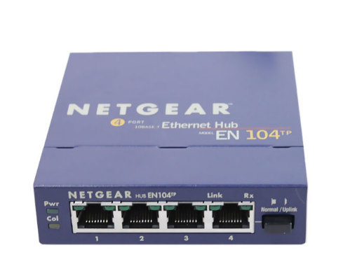
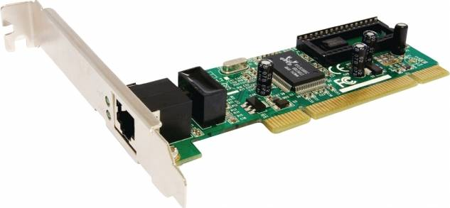
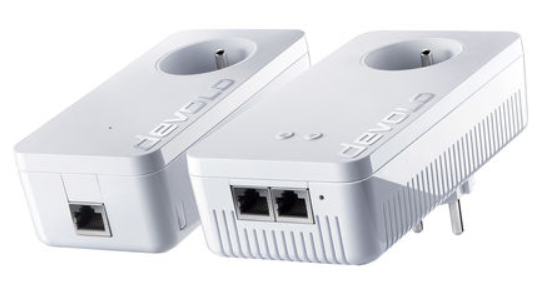
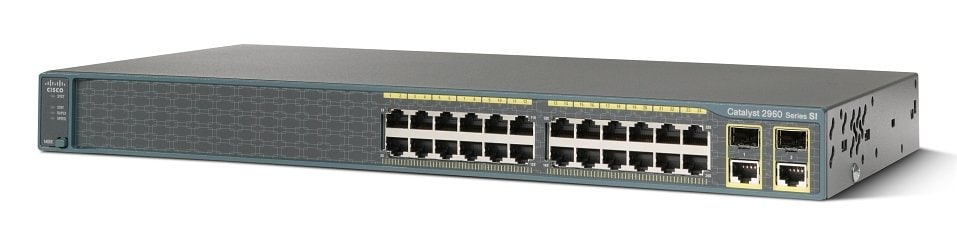
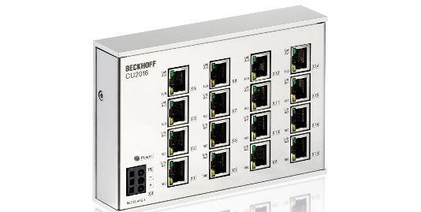
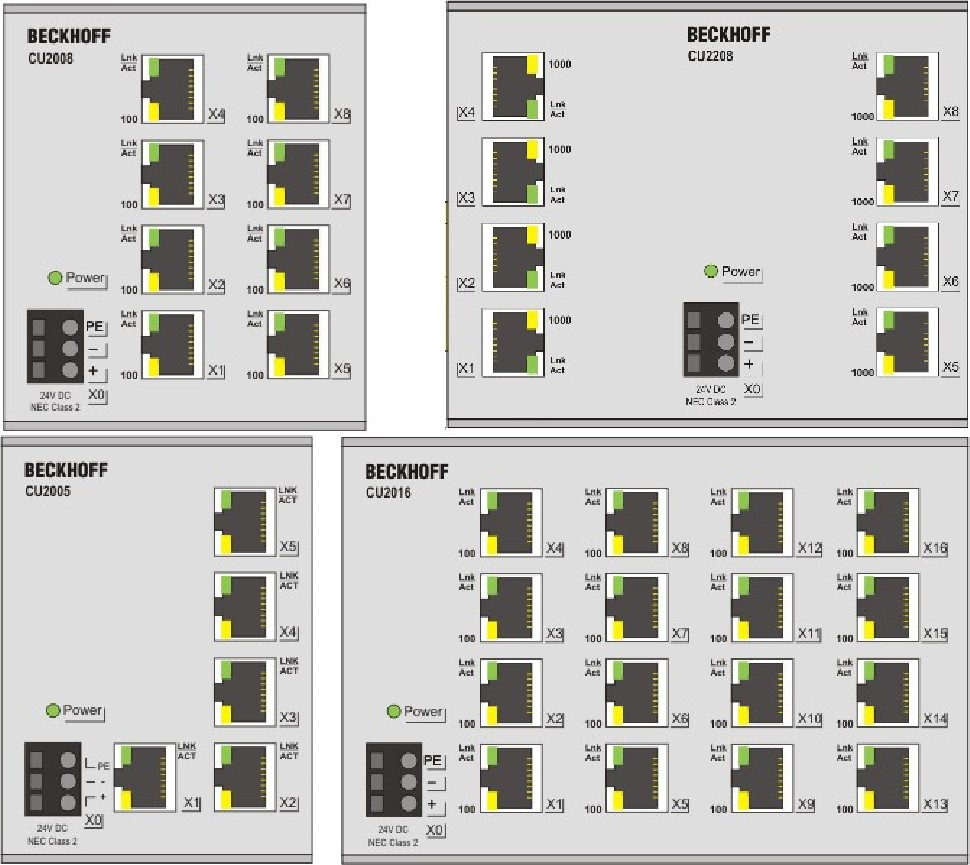
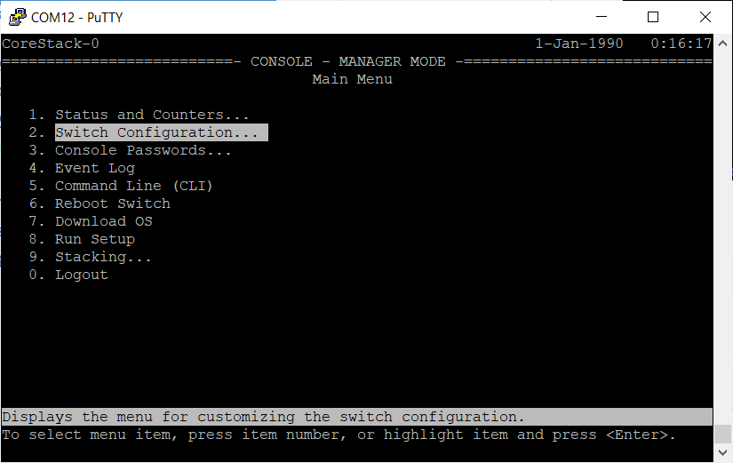

De hub werkt op de fysieke laag van het TCP/IP model. Dit betekent dat een hub geen weet heeft van MAC adressen. Het enige wat een hub doet is een binnenkomend frame verspreiden naar alle andere poorten.
Iedere ethernetpoort is intern met elkaar verbonden waardoor we een gedeeld transmissiemedium krijgen. Een frame dat aankomt op poort 1 komt tegelijkertijd aan op poort 2, 3 en 4. Een frame dat verstuurd wordt naar alle mogelijke ontvangers noemen we een broadcast.
Alle apparaten ontvangen het frame, zelfs al is het niet voor hen bestemd. Dit zorgt voor veel onnodig verkeer op het netwerk. Daarnaast zorgt het ook voor botsingen of collisions omdat twee apparaten tegelijkertijd frames kunnen versturen.
Het gebruiken van een hub in een computernetwerk is potentieel onveilig. Alle verkeer wordt namelijk doorgestuurd naar alle netwerkapparaten op het netwerk. Ieder netwerkapparaat ontvangt ieder frame.
De frames beschikken over een source en destination MAC adres. Als het destination MAC adres overeenkomt met het MAC adres van een netwerkapparaat wordt het frame door de netwerkkaart weerhouden en anders wordt het genegeerd. Het is dus de netwerkkaart die beslist om het pakket te aanvaarden of niet.
Als we een netwerkkaart in monitor mode plaatsen dan worden alle pakketten weerhouden, zelfs al zijn deze niet voor de netwerkkaart bestemd. Op die manier kunnen we alle gegevens onderscheppen.
Dit probleem stelt zich echter niet bij een switch of router gezien niet alle ethernetpoorten met elkaar intern doorverbonden zijn.
Een network interface card (NIC) of in het Nederlands een netwerkkaart is een hardware onderdeel in een computer.

Dit onderdeel is uiteraard nodig om die computer deel te uit te laten maken van een computernetwerk.
Soms is de netwerkkaart een aparte PCI-Express kaart maar tegenwoordig is deze al vaak standaard aanwezig op het moederbord.
De meeste netwerkkaarten zijn full duplex. Dit betekent dat ze gelijktijdig kunnen verzenden en ontvangen. De technologie die wordt gebruikt beslaat de eerste twee lagen van het TCP/IP model namelijk de fysieke laag en de datalink laag.
De fysieke laag omdat het type transmissiemedium (coax, RJ-45, glasvezel, ...) bepalend is voor de connector. Voor de meeste toepassingen wordt vooral de netwerkkaart met RJ-45 (UTP / STP / FTP) connector gebruikt. Indien een computer geen RJ-45 aansluiting heeft bestaan er USB-adapters op de markt.
Om een computer met een netwerkkaart te laten werken is software nodig: de zogenaamde drivers of stuurprogramma's. Voor veelgebruikte kaarten zijn deze drivers vaak onderdeel van het besturingssysteem. Anders worden ze met het product meegeleverd, of zijn doorgaans te downloaden op de website van de fabrikant van de netwerkkaart.
De snelheid van de netwerkkaart wordt vaak uitgedrukt als 10/100 Ethernet wat slaat op 10 Mbps of 100 Mbps ofwel 10/100/1000 Ethernet waarbij dit laatste slaat op 1 Gbps.
Iedere netwerkkaart heeft, zoals je al weet, zijn eigen MAC adres. Dit adres is statisch (het verandert nooit) en wordt toegekend tijdens het fabricageproces.
In de winkel zal je geen hub meer kunnen kopen maar powerline adapters werken wel nog volgens dit principe.
Deze adapters gebruiken de elektriciteitskabels.

De ene powerline adapter verbind je bijvoorbeeld via een ethernetkabel met een vrije poort op hub, switch of router en de andere powerline adapter, enkele kamers verder, verbind je via een ethernetkabel met een computer. Je hebt dus altijd minstens twee powerline adapters nodig.
De theoretische snelheid van een powerline netwerk varieert van 500 Mbps tot 2 Gbps maar weet dat de afstand en de kwaliteit van de bedrading een grote invloed hebben. Ook het aangesloten aantal apparaten kan een rol spelen gezien het elektriciteitsnetwerk geen punt tot punt verbinding is tussen de verschillende adapters.
Sommige powerline adapters zenden ook Wi-Fi uit. Op die manier kan je makkelijk jouw draadloos netwerk uitbreiden over langere afstanden.
Een switch is een ‘slimmer’ apparaat dat net zoals een hub het middelpunt kan zijn van aangesloten netwerkapparaten zoals computers, printers, spelconsoles,… in een single network.

Een ‘gewone’ switch werkt op de datalink laag (de tweede laag) van het TCP/IP model. Dit betekent dat de switch overweg kan met MAC adressering om frames efficiënt op hun bestemming te brengen binnen hetzelfde netwerk.
Met de netwerk laag (de derde laag) van het TCP/IP model kan een gewone switch echter niet overweg. Dit betekent dat dit type switch geen IP adressen kan interpreteren om pakketten op hun bestemming te brengen buiten het lokale netwerk. Deze taak zal opgenomen moeten worden door een router.
Er bestaat ook zoiets als een ‘layer 3 switch’ die wel overweg kan met IP adressen. Deze is vooral handig in grote netwerken waarbij deze dan eenvoudige taken kan overnemen van een router. Dit apparaat bespreken we echter niet want het valt buiten het bereik van deze cursus.
Intern in de switch wordt een MAC address table bijgehouden. In deze tabel staat er welk MAC address bij welke poort op de switch hoort.
Een switch opent iedere frame die aankomt op een van zijn poorten (in bovenstaande figuur tel je er 26) en kijkt naar het destination MAC address (en het source MAC address).
In de tabel wordt opgezocht welke poort bij het destination MAC address hoort en het frame wordt op deze enkele poort gezet. Een groot contrast met de hub waarbij het frame doorgestuurd werd naar alle poorten. We kunnen bijgevolg stellen dat een switch veel efficiënter en veiliger werkt dan een hub.
Je vraagt je misschien af hoe een switch weet welk MAC adres bij welke poort hoort? Met andere woorden: hoe wordt de MAC address table opgevuld? De switch is een lerend apparaat dat uit het netwerkverkeer informatie kan afleiden.
Onderstel even dat we een switch hebben met 4 poorten en dat de switch net aangezet werd. De MAC address table is dan leeg en een frame moet verstuurd worden van apparaat A naar apparaat B. Beide apparaten zijn op dezelfde switch aangesloten.
Wanneer een frame aankomt op de switch dan weet de switch het source MAC address en de overeenkomstige poort. De MAC address table wordt aangevuld met deze informatie.
| 1 | 2 | 3 | 4 |
| 80-32-53-43-31-5D | ? | ? | ? |
Het frame moet evenwel gestuurd worden naar de ontvanger en voor het destination MAC address is er geen informatie in de MAC address table. De switch gedraagt zich dan even als een hub en stuurt het frame naar alle poorten. Dit wordt ook wel een broadcast of flood (= vloed) genoemd.
Alle verbonden apparaten ontvangen het frame maar zij bekijken het destination MAC address en besluiten (vrijwillig) dat het frame niet voor hen bestemd is en laten het vallen (= frame drop). Enkel de ontvanger weerhoudt het frame en indien er informatie aangevraagd werd door de zender dan stuurt de ontvanger een frame terug.
De switch ziet nu opnieuw een binnenkomend frame met een source MAC address (die nu eigenlijk het MAC address is van apparaat B) op de bijhorende poort en vult de MAC address table opnieuw aan.
| 1 | 2 | 3 | 4 |
| 80-32-53-43-31-5D | ? | 80-32-53-43-31-59 | ? |
Wanneer apparaat A nu opnieuw een frame verstuurt naar apparaat B dan zijn beide MAC addresses gekend in de MAC address table. Het frame wordt dan slechts naar 1 poort verstuurd. Dit is dan uiteraard geen broadcast maar wel een unicast.
De Beckhoff industriële switch is een standaard layer 2 switch die je kan plaatsen op een DIN-rail. Gewoon 24V voorzien, de uitvoering kiezen (aantal poorten), monteren en je bent klaar.

Bekijk eens de datasheet op volgende pagina’s en beantwoord de vragen.
Product overviewBECKHOFF
Product overview
Introduction

The Beckhoff Ethernet switches offer five, eight or sixteen RJ45 Ethernet ports. Switches relay incoming Ethernet frames to the destination ports. In full duplex mode, they prevent collisions. They can be used universally in automation and office networks. User-friendly installation via integrated mounting rail adapter.
Their particular suitability for use in the industrial environment is underlined by the following benefits:
Technical data
| Technical data | CU2005 | CU2008 | CU2016 | CU2208 | ||||
|---|---|---|---|---|---|---|---|---|
| Bus system | Ethernet (all IEEE 802.3-based protocols) Store-and-forward switching mode, unmanaged | |||||||
| Number of Ethernet ports | 5 | 8 | 16 | 8 | ||||
| Ethernet interface | 10BASE-T/100BASE-TX Ethernet with RJ45 | 10 BASE-T/ I00BASETX/ I000BASE-T Ethernet with RJ45 | ||||||
| Cable length | up to 100 m twisted pair, switches cascadable without restriction | |||||||
| Baud rate | 10/100 Mbit/s, IEEE 802.3u auto-negotiation, half or full duplex, automatic settings | 10/100/1000 Mbit/s, IEEE 802.3u autonegotiation, half or full duplex, automatic settings | ||||||
| Diagnosis | 2 LEDs per channel:
| 2 LEDs per channel:
| ||||||
| Power supply | via three-pole spring loaded terminal (+, -, PE) | |||||||
| Supply voltage | 24 Voc (18 Voc to 30 Voc), protected against polarity reversal. Observe UL note | |||||||
| Current consumption | typically 90 mA | typically 100 mA | typically 150 mA | typically 180 mA | ||||
| Weight | approx. 270 g | approx. 340 g | approx. 540 g | approx. 430 g | ||||
| Dimensions without plugs (W x H x D) | approx. 73 mm x 100 mm x 38 mm | approx. 85 mm x 100 mm x 38 mm | approx. 146.5 mm x 100 mm x 38 mm | approx. 122 mm x 100 mm x 38 mm | ||||
| Mounting | on 35 mm DIN rail (mounting rail according to EN 50022) | |||||||
Basic function principles
Store and Forward
The switch operates according to the store-and-forward principle. Frames that are faulty (CRC error), too short (< 64 bytes) or too long (> 1536 bytes) are generally not passed on.
Address Memory
The switch learns the MAC addresses of the connected devices for each port. Only frames that have these addresses, broadcast/or multi-cast addresses, or which have unknown addresses are passed on to this port. Because the switch remembers more than 1000 addresses for each port, it is also suitable for connecting entire network segments. After approx. 5 minutes (Aging Time) unused addresses are removed from the memory. If required, they are re-learnt again later.
Throughput
The switch can pass through up to 148800 Ethernet frames per second (Wire Speed)
The CU20xx, CU22xx and CU26xx switches do not support POE according to IEEE 802.3; they do not reveal themselves as PSE (power sourcing equipment) or PD (powered devices). Any PSE connected to the switch must therefore not apply a voltage.
No provision is made in the standard for passive interconnection or distribution.
Jumbo Frames
Jumbo Frames are oversized Ethernet telegrams with a length of more than 1518 bytes. They are used in applications that require very high data throughput, for example.
The CU2208 (from hardware version 01) supports Jumbo Frames up to 9720 bytes on all ports. Please note the following:
Jumbo Frames are not subject to standardization. It is therefore necessary to verify that the frames used by the application are supported by the CU2208.
Een gewone layer 2 switch, zoals we net hebben besproken, is een apparaat zonder complexen. Je zet het ergens in het netwerk, je voorziet spanning en je kan naar eigen goeddunken apparaten aansluiten. Er is geen extra configuratie nodig.
Dat werkt goed zolang de vereisten enkel zijn dat frames moeten verplaatst worden tussen plaats A en B op het netwerk.
In een bedrijf of een grotere organisatie is het echter iets complexer dan dat. Er zijn verschillende types netwerkverkeer zoals spraak, video, data, frames die in (bijna) realtime moeten afgeleverd worden voor een geautomatiseerd productie proces, ... Er zijn ook verschillende types gebruikers zoals machine-operatoren, management, ... en niet iedereen heeft dezelfde rechten op het netwerk.
Op een managed switch kan je je aanmelden en daarna het verkeer parameterizeren. De parameters die je kan instellen hebben voornamelijk te maken met de informatie die je kan terugvinden in een frame. In het labo ga je hierop een oefening moeten maken.

Je zou bijvoorbeeld kunnen instellen dat enkel MAC adres 00:11:22:33:44:55 aangesloten mag zijn op poort 1 van de switch. Op die manier kan je de toegang beperken tot het netwerk. Uiteraard moet je er dan wel voor zorgen dat de gebruiker niet gewoon zijn kabel in een andere poort kan stoppen...
Maar hoe weet je nu bijvoorbeeld dat de data in een frame tijdsgevoelig is? Of hoe stel je rechten in? Die informatie staat niet vermeld in de velden van een standaard ethernet frame…
Herinner je je nog dat we in vorig hoofdstuk zeiden dat in het length field van een frame de waarde niet groter mocht zijn dan 1500? Als dat toch het geval is, dan weet de switch dat we te maken hebben met een complexer ethernet frame en zullen de velden anders geïnterpreteerd worden.
Preamble (7 bytes) | Start Frame Delimiter (1 byte) | Destination MAC Address (6 bytes) | Source MAC Adddres (6 bytes) | Tag Protocol Identifier (2 bytes) | Tag Control Information (2 bytes) | Length (2 bytes) | Data (46 – 1500 bytes) | Frame Check Sequence (4 bytes) |
Waar vroeger het Length veld stond staat nu het Tag Protocol Identifier veld. Als de waarde hiervan hexadecimaal 0x8100 (33024 decimaal) is, dan weet de switch dat we te maken hebben met een frame waarbij er eerst nog een Tag Control Information veld volgt vooraleer de length en de data worden doorgestuurd.
Als we het Tag Control Information veld even in detail bekijken dan zien we dat er drie bits voorzien worden voor de Priority Code Point en één bit voor Drop Eligible Indicator. De naam alleen al geven je misschien een idee waarvoor deze velden zullen dienen. Een ander veld is VLAN ID. Beide bespreken we in volgende hoofdstukken en we beginnen met het uitleggen wat een VLAN precies is.
| Tag Control Information | ||
Priority Code Point (PCP) (3 bits) | Drop Eligible Indicator (DEI) (1 bit) | VLAN ID (12 bits) |